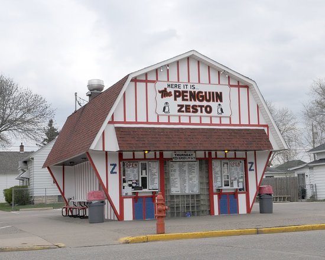
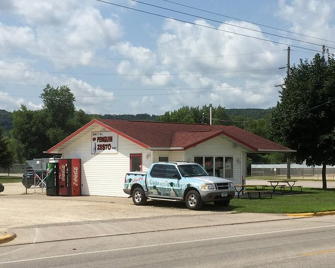

Zesto's East
Zesto’s, officially known as The Penguin Zesto’s, is a popular local restaurant that serves food, as well as
delictible treats like ice cream (I recommend the Chocolate Dip).
It is located at both the East
and West ends of Winona, and close down after the Summer has passed.
Sales tax is already added to the price tag,
and each item has a well rounded cost. For example, a medium cone costs exactly $2.50.
Zesto’s East is fashioned like a barn and serves customers outdoors. You order and eat outside.
Zesto’s West is a more standard walk-in restaurant where you order inside, but only holds tables
outside the building.
They are popular summer choices for easy or confortable meals or if
you want some delicious ice cream.

Zesto's West